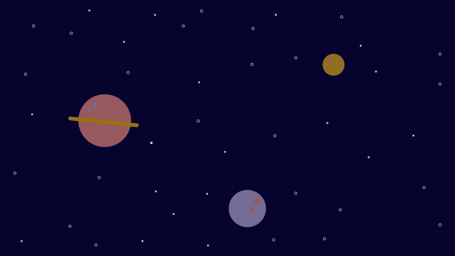

"Outstanding student award 2022 winner for MSIS at The University of Cincinnati"
"You are continuing in supporting all the critical PTaaS programs since long as and when needed with great spirit and commitment. Always reachable and never heard NO for any ask. Much appreciated" - Practice Head

"It's an excellent and valuable work to build assurance and confidence" - Client
